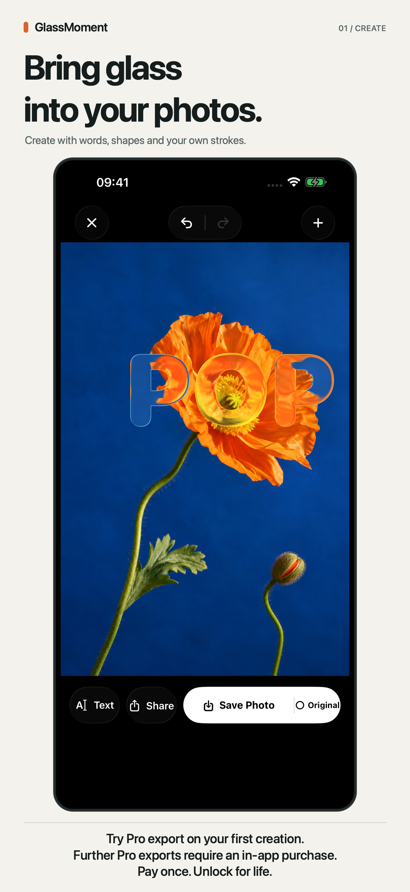
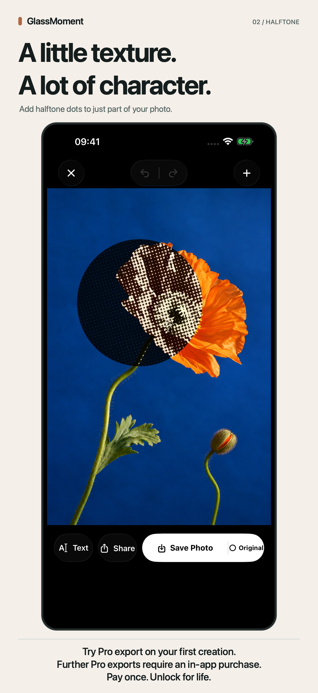
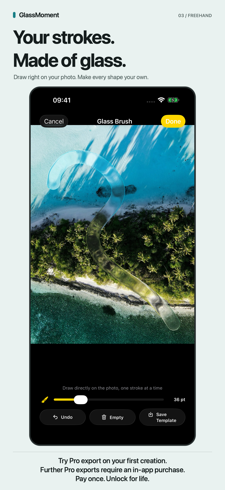

GlassMoment
Turn your photos into glass art
Capture or import a photo and compose with glass shapes.
Not publicly available yet
iOS 26+ · English and Simplified Chinese.



Make it part of your day
01
Capture or import a photo and compose with glass shapes.
02
Add halftone dots or pixels to selected areas.
03
Combine freehand strokes, letter shapes and layers.
04
Save, favorite and revisit supported works to edit their layers.
What to expect
Create still photos with glass shapes, freehand strokes, lettering and layered effects. Reopen supported saved works to keep editing their layers. Existing flattened images cannot recover missing layers.
Free access and purchases
Basic compositions are free to export. The first successful save or share uses the introductory experience; exports of the current creation continue until you finish or restart. Later professional exports require a one-time lifetime upgrade.